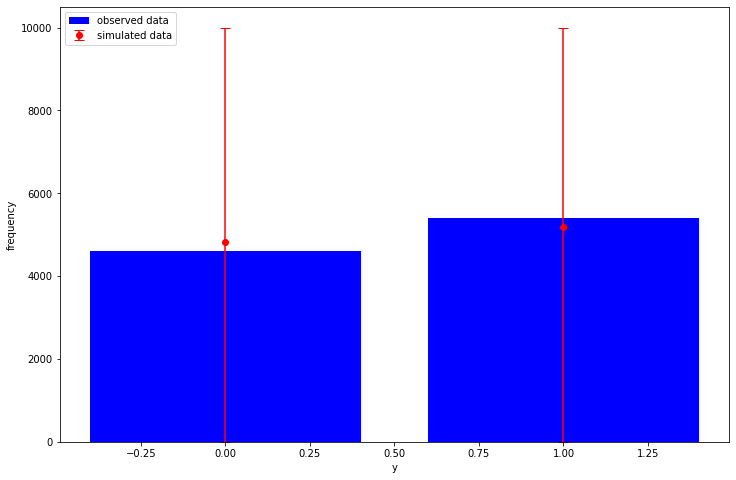
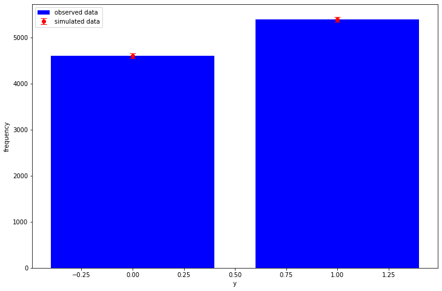

Thanks to this thread I recently learned about the JointDistribution.sampledistributions member function and it's something I've really wanted for a while.
My workflow used to be as is described in the thread and I've been annoyed that I had to
re-implement some of my model after obtaining posterior samples in order to do stuff
like posterior predictive checks. Simply running model.sample() would sample new
values from the prior of my parameters when I wanted to use the posterior samples which
I had. An example of this is in my ordered logistic post.
Anyway, the value argument in sample_distributions handles all of this nicely,
here's an example of how it works with a bernoulli glm:
import tensorflow as tf import tensorflow_probability as tfp import time as tm import matplotlib.pyplot as plt import numpy as np plt.rcParams["figure.figsize"] = (12, 8) tfd = tfp.distributions tfl = tf.linalg N = 10_000 P = 20 intercept_true = tfd.Normal(loc=0.666, scale=1.0).sample() coefficients_true = tfd.Normal(loc=0.0, scale=3.14).sample(P) x = tfd.Normal(loc=0.0, scale=1.0).sample([N, P]) y = tfd.Bernoulli(intercept_true + tfl.matvec(x, coefficients_true)).sample() Root = tfd.JointDistributionCoroutine.Root print(f"tf: {tf.__version__}") print(f"tfp: {tfp.__version__}")
tf: 2.2.0-dev20200416 tfp: 0.11.0-dev20200416
def model(): intercept = yield Root(tfd.Normal(loc=0.0, scale=10.0)) coefficients = yield Root( tfd.MultivariateNormalLinearOperator(scale=tfl.LinearOperatorIdentity(P)) ) y = yield tfd.Independent( tfd.Bernoulli(intercept[..., tf.newaxis] + tfl.matvec(x, coefficients)), reinterpreted_batch_ndims=1, ) joint_dist = tfd.JointDistributionCoroutine(model)
def plot_ppc(y, y_rep): sampled_counts = [np.bincount(sample, minlength=2) for sample in y_rep] observed_counts = np.bincount(y) sampled_mean = np.mean(sampled_counts, axis=0) sampled_quantiles = np.quantile(sampled_counts, q=[0.025, 0.975], axis=0) low_error = sampled_mean - sampled_quantiles[0] high_error = sampled_quantiles[1] - sampled_mean plt.bar( x=[0, 1], height=observed_counts, label="observed data", color="blue", ) plt.errorbar( x=[0, 1], y=sampled_mean, yerr=[low_error, high_error], fmt="o", label="simulated data", color="red", capsize=5, ) plt.legend(loc="upper left") plt.xlabel("y") plt.ylabel("frequency") prior_intercept, prior_cofficients, prior_y = joint_dist.sample(1_000) plot_ppc(y, prior_y)

def target_log_prob_fn(*state): return joint_dist.log_prob(list(state) + [y]) def trace_fn(states, pkr): return ( pkr.inner_results.target_log_prob, pkr.inner_results.leapfrogs_taken, pkr.inner_results.has_divergence, pkr.inner_results.energy, pkr.inner_results.log_accept_ratio, ) def step_size_setter_fn(pkr, new_step_size): return pkr._replace(step_size=new_step_size) def step_size_getter_fn(pkr): return pkr.step_size def log_accept_prob_getter_fn(pkr): return pkr.log_accept_ratio num_chains = 6 initial_state = list(joint_dist.sample(num_chains)[:-1]) initial_step_size = [0.1] * len(initial_state) nuts = tfp.mcmc.NoUTurnSampler(target_log_prob_fn, step_size=initial_step_size) adaptive_nuts = tfp.mcmc.DualAveragingStepSizeAdaptation( inner_kernel=nuts, num_adaptation_steps=800, target_accept_prob=0.8, step_size_setter_fn=step_size_setter_fn, step_size_getter_fn=step_size_getter_fn, log_accept_prob_getter_fn=log_accept_prob_getter_fn, ) @tf.function(autograph=False, experimental_compile=True) def run_mcmc(): return tfp.mcmc.sample_chain( num_results=1_000, current_state=initial_state, num_burnin_steps=1_000, kernel=adaptive_nuts, trace_fn=trace_fn, ) s = tm.time() mcmc_samples, mcmc_stats = run_mcmc() e = tm.time() print(f"run_mcmc finished in {e - s:.2f} seconds")
run_mcmc finished in 28.60 seconds
And here is the magic:
posterior_distributions, posterior_samples = joint_dist.sample_distributions(value=mcmc_samples + [None])
posterior_samples now contains the samples the MCMC routine gave us earlier for the
intercept and coefficients parameters:
print(f"intercept: {np.allclose(posterior_samples[0], mcmc_samples[0])}") print(f"coefficients: {np.allclose(posterior_samples[1], mcmc_samples[1])}")
intercept: True coefficients: True
and we have sampled from our Bernoulli observation model using our posterior/MCMC samples, so the (very basic) posterior predictive check now looks like:
posterior_y = tf.reshape(posterior_samples[-1], [-1, N])
plot_ppc(y, posterior_y)

Additionally, we can also easily calculate useful stuff like the "log-likelihood" matrix needed for LOO:
log_lik = posterior_distributions[-1].distribution.log_prob(y) print(log_lik.shape) # (draws, chains, num_observations)
(1000, 6, 10000)
It always annoyed me in stan when I had to re-write the observation model in the generated quantities block to calculate this, and the same for TensorFlow Probability until now.